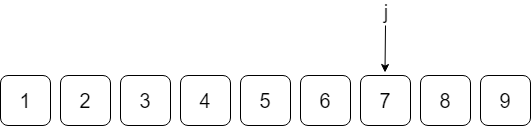
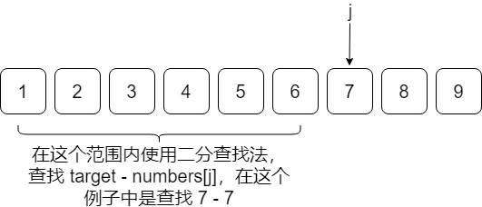
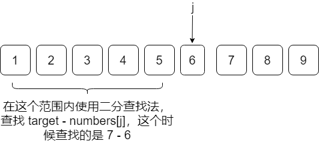

Given an array of integers that is already sorted in ascending order, find two numbers such that they add up to a specific target number.
The function twoSum should return indices of the two numbers such that they add up to the target, where index1 must be less than index2.
Note:
xxxxxxxxxx31Input: numbers = [2,7,11,15], target = 92Output: [1,2]3Explanation: The sum of 2 and 7 is 9. Therefore index1 = 1, index2 = 2.
先说一下我的解题思路。使用两个指针，A 指针指向数组的第一个元素，B 指针指向数组的最后一个元素，然后比较 numbers[A] + numbers[B] 和 target 的大小，
在最坏情况下，直到 A 和 B 相遇，才能找到最终解，所以该算法的时间复杂度是 O(n)。代码如下：
x
1public static int[] twoSum(int[] numbers, int target) {2 int low = 0, high = numbers.length - 1;3 while(numbers[low] + numbers[high] != target) {4 if(numbers[low] + numbers[high] < target)5 low++;6 if(numbers[low] + numbers[high] > target)7 high--;8 }9 return new int[] {low + 1, high + 1};10}当我提交代码后，发现这并不是最快的算法。
然后我查看了一下用时最少的代码，是这样写的：
x
1public int[] twoSum(int[] numbers, int target) {2 int j = numbers.length-1;3 int[] output = new int[2];4 if(numbers[0] >= 0)5 while(numbers[j] > target && j >= 0) --j;6 //System.out.println("j="+j);7 for(; j >= 0; j--){8 int diff = target - numbers[j];9 int right = j;10 int left = 0;11 //System.out.println("diff="+diff);12 while(left < right){13 int mid = (left+right)/2;14 //System.out.println("mid:" +mid+", left:"+left+", right:"+right);15 if(numbers[mid] == diff){16 output[0] = mid+1;17 output[1] = j+1;18 return output;19 }20 if(numbers[mid] > diff){21 right = mid;22 //System.out.println("check left part, right = "+right);23 }24 else{25 left = mid+1;26 // System.out.println("check right part, left = "+left);27 }28 }29 }30 return output;31}这个代码的思路是，先对数组做一个预处理：
如果数组的第一个元素大于等于 0，那么就找到位于最右边的不大于 target 的元素，将这个元素的索引记为 j。
然后从 numbers[j] 开始，在 numbers[0 : j-1] 中使用二分查找的方式，查找 target - numbers[j]，如果找到了，就返回 j+1 和 target - numbers[j] 的索引加 1，如果找不到，则令 j = j - 1，然后在 numbers[0 : j-1] 中使用二分查找的方式，查找 target - numbers[j]……以此类推，直到找到最终解。
怕我的描述不够清晰，所以画了几张图来帮助大家理解这段代码。以数组
numbers = {1, 2, 3, 4, 5, 6, 7, 8, 9}
为例，若 target 是 7，那么首先看第一个元素 numbers[0] = 1 > 0，故需要做一个预处理，找到位于最右边的不大于 7 的元素，如下图：

这时 j 指向 7，然后开始在 numbers[0 : j-1] 中进行二分查找：

查找失败，j 向前挪一个元素，j = j - 1，这时 j 指向 6，然后在 numbers[0 : j-1] 中进行二分查找：

最后找到 1，所以就返回 1 的索引加 1，以及 6 的索引加 1。
前面讲到过了，我提交的代码所用到的算法，时间复杂度是 O(n)，在 LeetCode 上面的执行时间是 1ms，然而上面讲的用时最少的那个算法，用时竟然都不到 1ms。我认为它的高明之处首先在于对数组做了一个预处理，将问题规模减小了一定的程度；其次就是利用数组的有序性，使用了二分查找法，使得查找时间大大缩短。二者缺一不可，如果没有预处理，上来就使用二分查找，那么代码的时间复杂度将会是 ，只有预处理，不使用二分查找，那么代码的时间复杂度会是 ，这两种情况无论哪一种在速度上都是比不过我提交的代码的，但是二者一结合，瞬间秒杀其他算法，这也是算法的魅力所在。